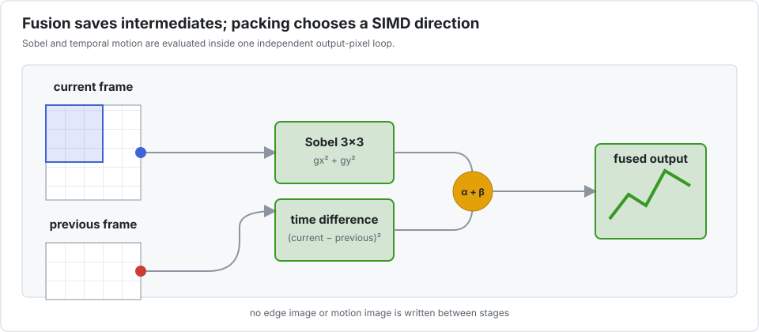

Fused Sobel and motion detection
This kernel combines a 3×3 Sobel edge response from the current frame with the squared difference between current and previous frames. Fusion avoids writing two intermediate images.

See it
Fused Sobel edge response and temporal motion differencing, the kernel benchmarked below.
Unlike the audio demo, this clip was not re-rendered by this package. It comes from Legolas++, the C++ project these ideas come from, which ships the same fused kernel. The Julia port computes the same result — the test suite checks it against a scalar oracle — but re-rendering the clip needs the original footage, which is not in this repository.
It is kept because it shows what the kernel does, which no diagram conveys. It is not evidence about this implementation's output or speed; for that, see the measurements below.
Each output pixel depends on a neighbourhood of input pixels, but output pixels do not depend on earlier output pixels. Like depthwise convolution, the contiguous spatial loop is open to ordinary compiler vectorization. The benchmark tests whether packing independent streams is still worthwhile.
The benchmark
bench/video.jl processes 256 independent pairs of 128×128 frames. Its operation estimate is 23 floating-point operations per interior output pixel.
| configuration | time | estimated GFlop/s | speedup vs scalar |
|---|---|---|---|
| scalar reference | 2.17 ms | 43.1 | 1.00× |
P=1 | 2.19 ms | 42.7 | 0.99× |
P=2 | 5.04 ms | 18.5 | 0.43× |
P=4 | 2.49 ms | 37.5 | 0.87× |
P=8 | 2.48 ms | 37.7 | 0.88× |
P=16 | 2.43 ms | 38.4 | 0.89× |
P=32 | 2.35 ms | 39.7 | 0.92× |
No sequential packed configuration beats the ordinary layout. Fusion is valuable, but DLI is not what creates that value.
With explicit task parallelism
| configuration | time | estimated GFlop/s | speedup vs scalar | speedup vs threaded P=1 |
|---|---|---|---|---|
P=1, 10 threads | 0.64 ms | 145.8 | 3.38× | 1.00× |
P=2, 10 threads | 1.15 ms | 81.2 | 1.88× | 0.56× |
P=4, 10 threads | 0.63 ms | 149.4 | 3.46× | 1.03× |
P=8, 10 threads | 0.67 ms | 139.8 | 3.24× | 0.96× |
P=16, 10 threads | 0.52 ms | 178.8 | 4.15× | 1.23× |
P=32, 10 threads | 0.50 ms | 186.5 | 4.32× | 1.28× |
In this particular run P=32 became fastest only after threading, by 28% over threaded P=1. That is much smaller—and more sensitive to cache, scheduling, and machine load—than the 4.32× comparison with a serial reference suggests. The defensible default remains P=1; retune the combined threaded configuration for the target stream count and frame size.
Competing approaches
- Plain Julia/LLVM is already effective for the spatial loop. Keeping a fused loop and a normal array is the lowest-complexity baseline.
- Tullio is well suited to expressing the Sobel stencil in index notation. Their legality assumptions must still be checked when output aliases an input.
- Image-processing or neural-network libraries are preferable when their primitive matches the full pipeline, especially if they provide optimised CPU and GPU backends. Separate Sobel and difference calls may, however, materialise intermediates unless fusion is available.
- A custom
CUDA.jlkernel can map pixels and streams to GPU threads and preserve fusion. It is attractive for device-resident video, but launch, transfer, and integration costs matter for small CPU-resident frames. - Threads are a complement rather than a rival to SIMD. Here they provide most of the gain; the table isolates the smaller incremental effect of packing.
This case study demonstrates the project's stop rule: a tool that can decline its own transformation is safer than one that labels every emitted vector instruction a success.